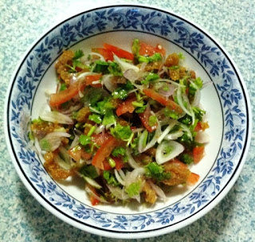
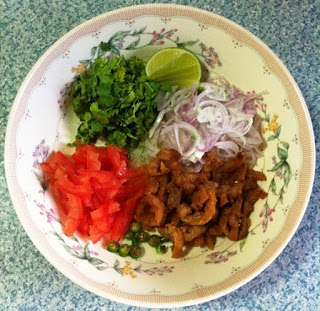

ငါးဖယ္သုပ္

ပါဝင္ ပစၥည္းမ်ား
ခရမ္းခ်ဥ္သီ ၁လံုး အေစ့ဖယ္၊ ပါးပါးလွီးျပီး
သံပုရာသီး ၁ျခမ္း
ငရုတ္သီးစိမ္း အနည္းငယ္ ပါးပါးလွီးျပီး
ဆီ အနည္းငယ္
အခ်ိဳမႈန္႔
ဆား အနည္းငယ္

ျပဳလုပ္နည္း အဆင့္ဆင့္
ပါဝင္ ပစၥည္း အားလံုးကို ဇလံုထဲ ထည့္ျပီး သမေအာင္ နယ္ပါ။
အငံစားခ်င္ရင္ေတာ့ ငံျပာရည္ အနည္းငယ္ ထည့္ျပီး သုပ္ႏိုင္ပါတယ္။